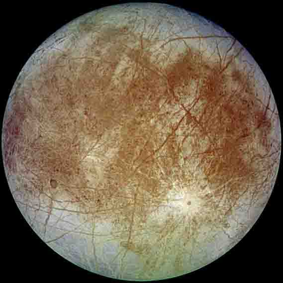
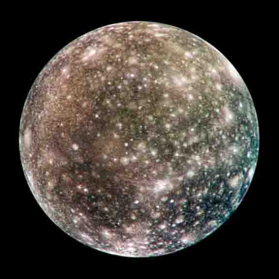

Moons

Europa
Europa is the sixth-closest moon of the planet Jupiter, and the smallest of its four satellites.
- Diameter (km)
- 3,100 km
- Mass (kg)
- 1022 kg
- Orbital period
- 181 days

Callisto
Callisto was discovered in 1610 by Galileo Galilei. It is the third-largest moon in the Solar System
- Diameter (km)
- 4,841 km
- Mass (kg)
- 1023 kg
- Orbital period
- 184 days
Discovery of Jupiter's Moons
The first claimed observation of one of Jupiter's moons is that of the Chinese astronomer Gan De around 364 BC. However, the first certain observations of Jupiter's satellites were those of Galileo Galilei in 1609. By March 1610, he had sighted the four massive Galilean moons with his 30x magnification telescope: Ganymede, Callisto, Io, and Europa. No additional satellites were discovered until E. E. Barnard observed Amalthea in 1892.
Jupiter has been explored on several occasions by robotic spacecraft.